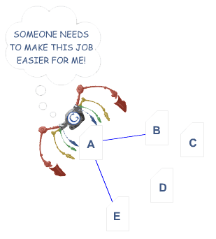
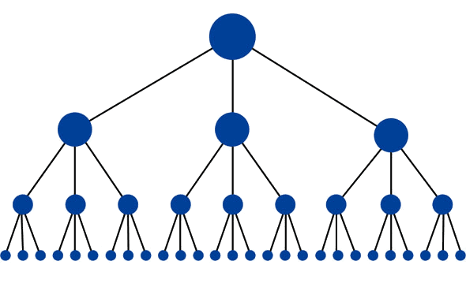
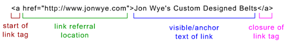
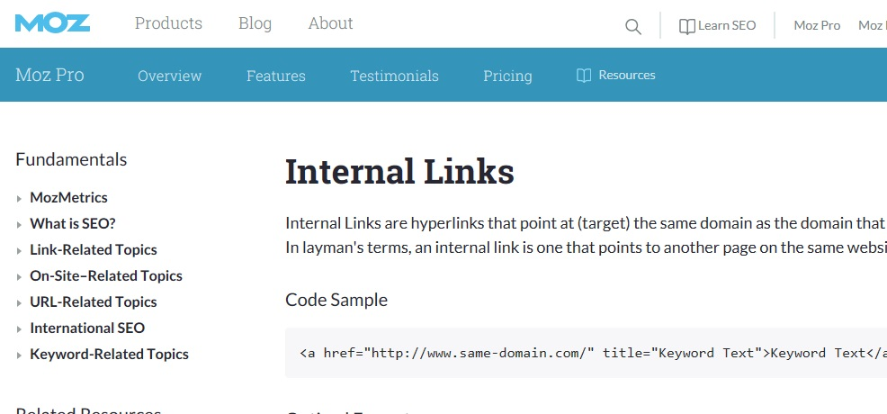

INTERNAL LINKS
Internal Links are hyperlinks that point at (target) the same domain as the domain that the link exists on (source). In layman's terms, an internal link is one that points to another page on the same website.
Optimal Format
Use descriptive keywords in anchor text that give a sense of the topic or keywords the source page is trying to target.
What is an Internal Link?
Internal links are links that go from one page on a domain to a different page on the same domain. They are commonly used in main navigation.
-They allow users to navigate a website.
-They help establish information hierarchy for the given website.
-They help spread link juice (ranking power) around websites.
SEO BEST PRACTICES
internal linking refers to any links from one page on a domain which leads and opens to another page on that same domain page
Internal links are most useful for establishing site architecture and spreading link juice (URLs are also essential). For this reason, this section is about building an SEO-friendly site architecture with internal links.
On an individual page, search engines need to see content in order to list pages in their massive keyword–based indices. They also need to have access to a crawlable link structure—a structure that lets spiders browse the pathways of a website—in order to find all of the pages on a website. (To get a peek into what your site's link structure looks like, try running your site through Open Site Explorer.) Hundreds of thousands of sites make the critical mistake of hiding or burying their main link navigation in ways that search engines cannot access. This hinders their ability to get pages listed in the search engines' indices. Below is an illustration of how this problem can happen:
In the example above, Google's colorful spider has reached page "A" and sees internal links to pages "B" and "E." However important pages C and D might be to the site, the spider has no way to reach them—or even know they exist—because no direct, crawlable links point to those pages. As far as Google is concerned, these pages basically don’t exist–great content, good keyword targeting, and smart marketing don't make any difference at all if the spiders can't reach those pages in the first place.
The optimal structure for a website would look similar to a pyramid (where the big dot on the top is homepage):
This structure has the minimum amount of links possible between the homepage and any given page. This is helpful because it allows link juice (ranking power) to flow throughout the entire site, thus increasing the ranking potential for each page. This structure is common on many high-performing websites (like Amazon.com) in the form of category and subcategory systems.
But how is this accomplished? The best way to do this is with internal links and supplementary URL structures. For example, they internally link to a page located at http://www.example.com/mammals... with the anchor text "cats." Below is the format for a correctly formatted internal link. Imagine this link is on the domain jonwye.com.

Links in Submission-Required Forms
Forms can include elements as basic as a drop–down menu or elements as complex as a full–blown survey. In either case, search spiders will not attempt to "submit" forms and thus, any content or links that would be accessible via a form are invisible to the engines.
Links Only Accessible Through Internal Search Boxes
Spiders will not attempt to perform searches to find content, and thus, it's estimated that millions of pages are hidden behind completely inaccessible internal search box walls.
Links in Frames or I-Frames
Technically, links in both frames and I-Frames are crawlable, but both present structural issues for the engines in terms of organization and following. Only advanced users with a good technical understanding of how search engines index and follow links in frames should use these elements in combination with internal linking.
By avoiding these pitfalls, a webmaster can have clean, spiderable HTML links that will allow the spiders easy access to their content pages. Links can have additional attributes applied to them, but the engines ignore nearly all of these, with the important exception of the rel="nofollow" tag.
Want to get a quick glimpse into your site's indexation? Use a tool like Moz Pro, Open Site Explorer, or Screaming Frog to run a site crawl. Then, compare the number of pages the crawl turned up to the number of pages listed when you run a site:search on Google.
Rel="nofollow" can be used with the following syntax:
nofollow this link
In this example, by adding the rel="nofollow" attribute to the link tag, the webmaster is telling the search engines that they do not want this link to be interpreted as a normal, juice passing, "editorial vote." Nofollow came about as a method to help stop automated blog comment, guestbook, and link injection spam, but has morphed over time into a way of telling the engines to discount any link value that would ordinarily be passed. Links tagged with nofollow are interpreted slightly differently by each of the engines.
sOURCES
We all love to explore the work of others.So , we have provided some with different authors to that defines how SEO works included here are what's most important to you.

INTERNAL LINKING BY MOZ.COM
Internal Links are hyperlinks that point at (target) the same domain as the domain that the link exists on (source). In layman's terms, an internal link is one that points to another page on the same website.Internal links are most useful for establishing site architecture and spreading link juice (URLs are also essential). For this reason, this section is about building an SEO-friendly site architecture with internal links.
Learn more
The Seven Commandments of Internal Linking that Will Improve Content Marketing SEO
Nearly every article on internal linking starts with a discussion of how complicated yet how important the subject matter is. On the one hand, internal linking is such a simple concept, and everyone should be doing it. On the other hand, the theory, process, and best practices of internal linking get extraordinarily complex. It’s both advanced and simple. But regardless of how complex or basic you think it is, no one argues about this: It is important.
Learn more